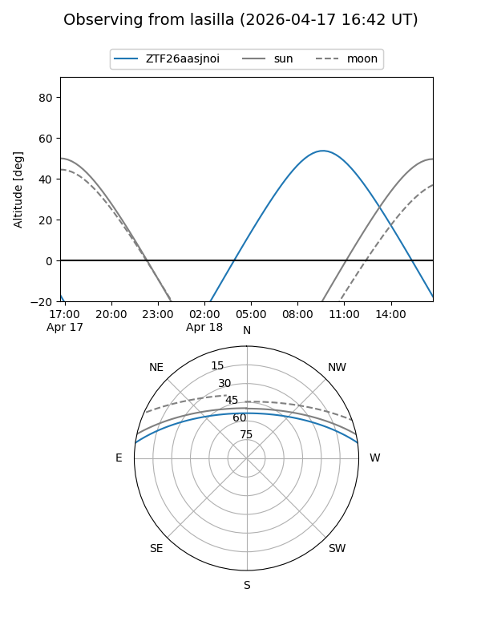
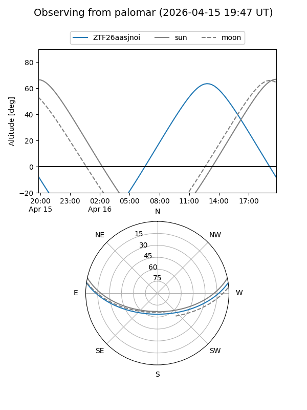
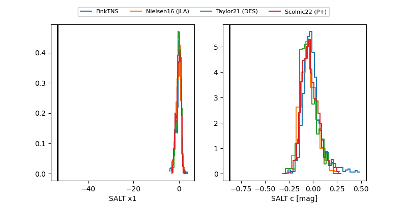

ZTF26aasjnoi
Target ZTF26aasjnoi at 2026-04-20 13:59
Aliases and brokers:
FINK: link
Lasair: link
ALeRCE: link
alt names
ZTF26aasjnoi (ztf,fink_ztf)
Coordinates:
equatorial (ra, dec) = 279.9072,+6.92249
equatorial (HMS+DMS) = 18:39:37.72,+06:55:20.95
galactic (l, b) = (37.7723,+5.76581)
Flags:
Photometry:
last atlasc=18.17, atlaso=17.12, ztfg=18.78, ztfr=16.73
1 atlasc, 1 atlaso, 4 ztfg, 1 ztfr detections
Lightcurve
Visibility


Additional plots
